Ce tableau a énormément changé au cours des derniers mois. Il est le fruit d'une année de campagne de jeu de rôle entre amis, qui s'est déroulée pendant l'année de 3ème, au collège. On y retrouve de nombreux détails rendant homamge aux aventures vécues durant l'année. Il est peint par Elise Bubu, qui joue Lystreya. Elisa joue Astrid Nimbus, et d'autres amis jouent Pymkins Behozhay et Gimlin le nain. Margot est mâitre du jeu. En dessous, vous pourrez observer les différentes étapes par lesquelles est passé le tableau, du croquis originel jusqu'au tableau final qui se trouve face à vous.
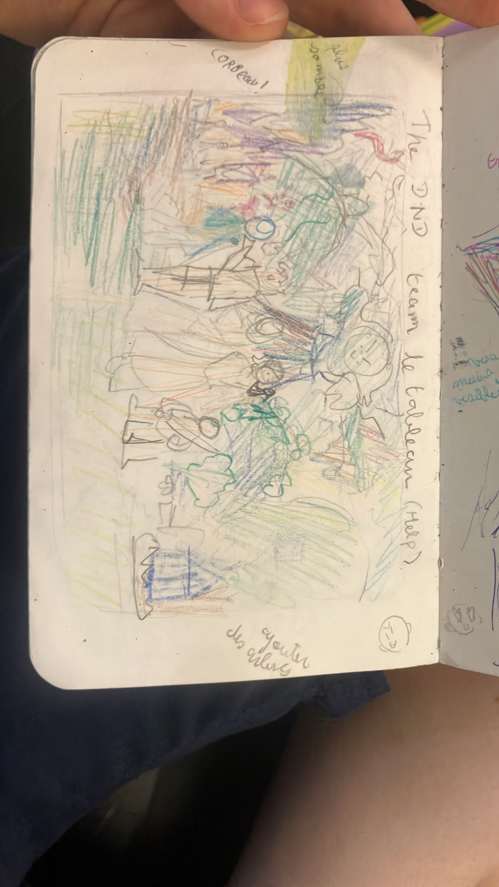
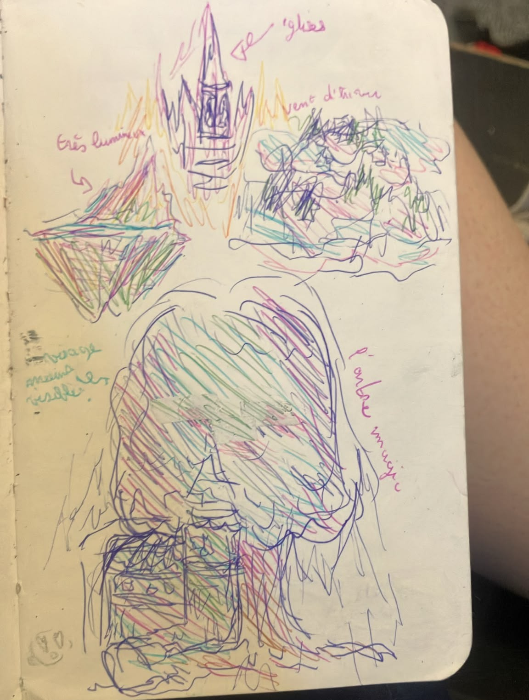
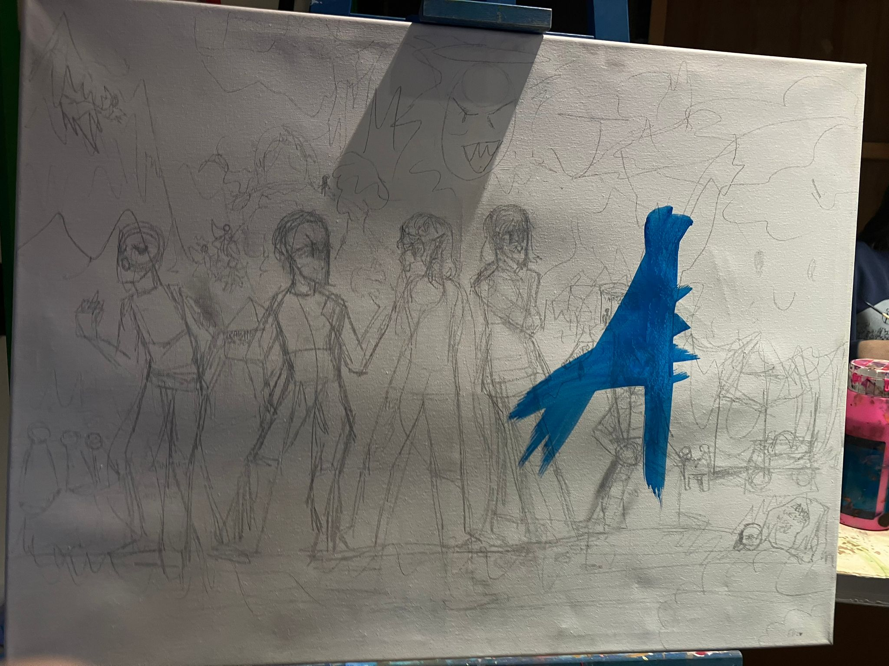
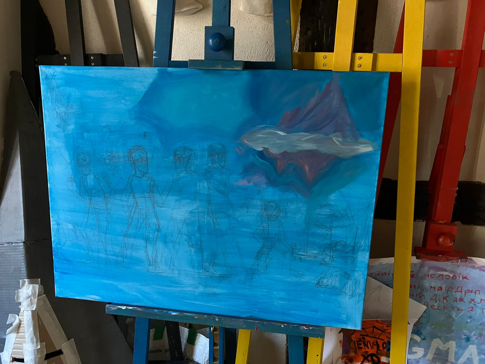
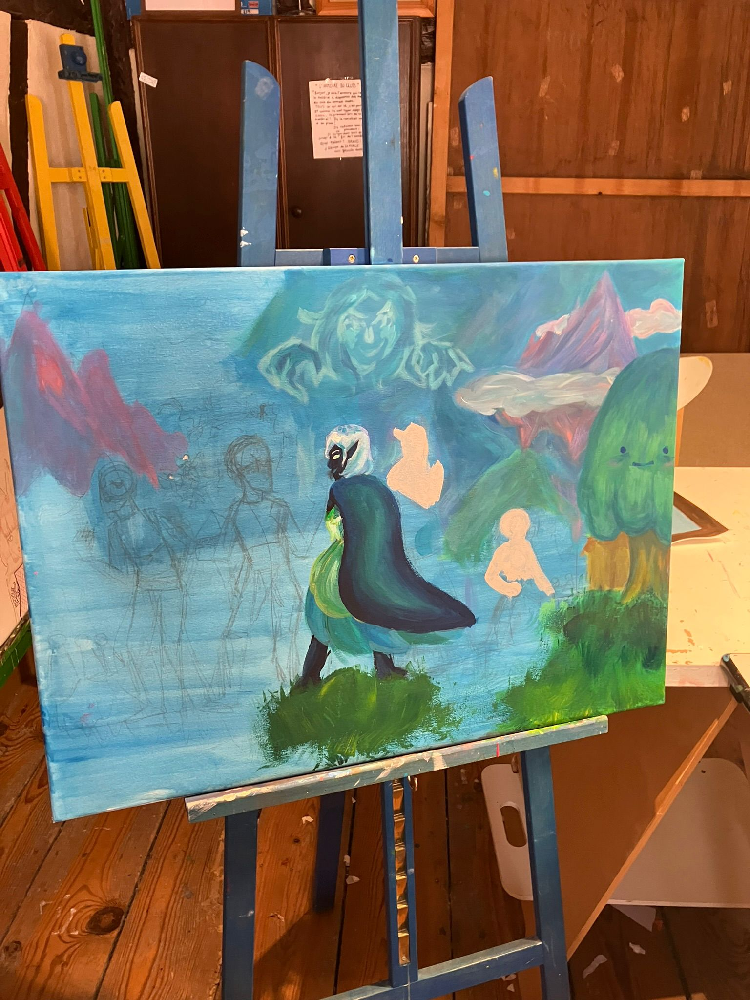
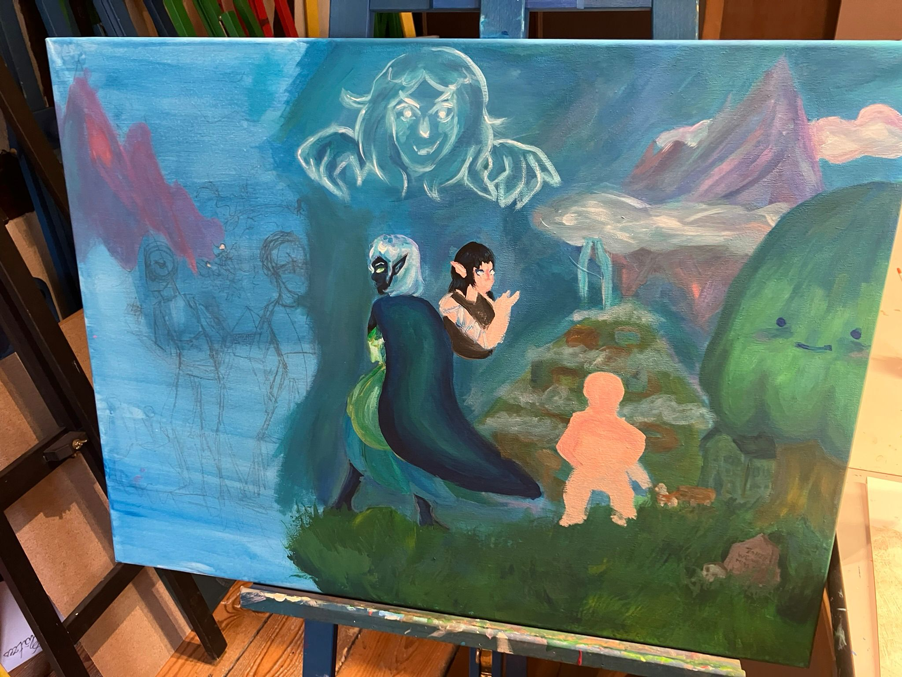
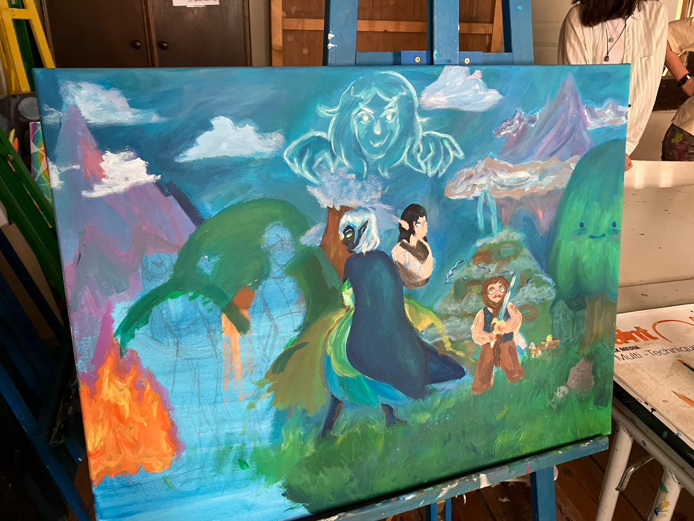
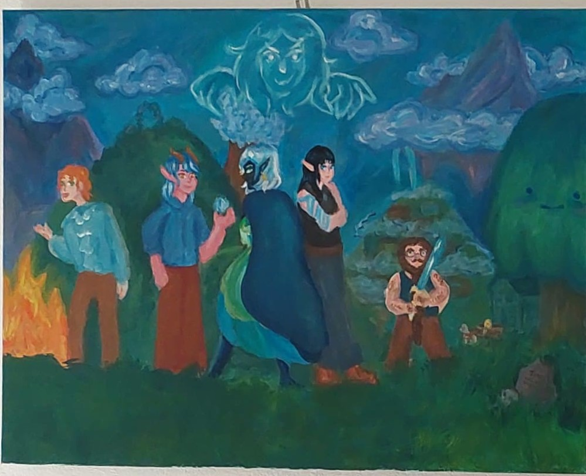
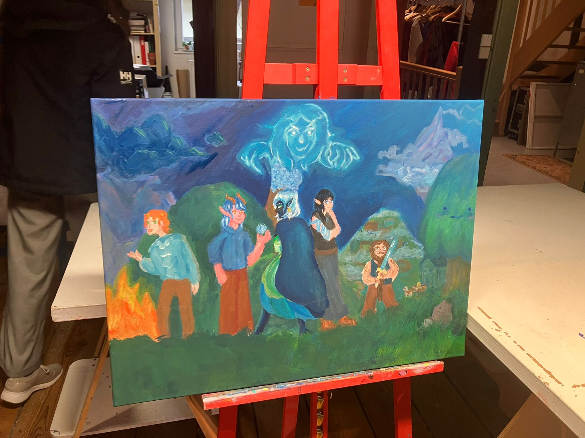
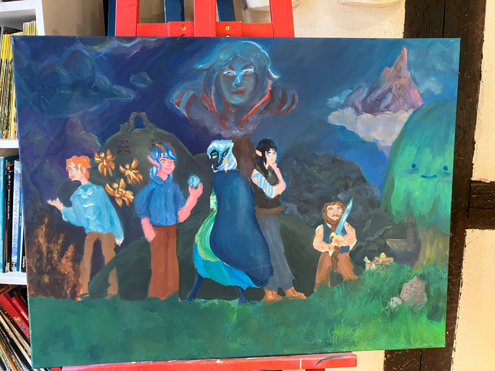
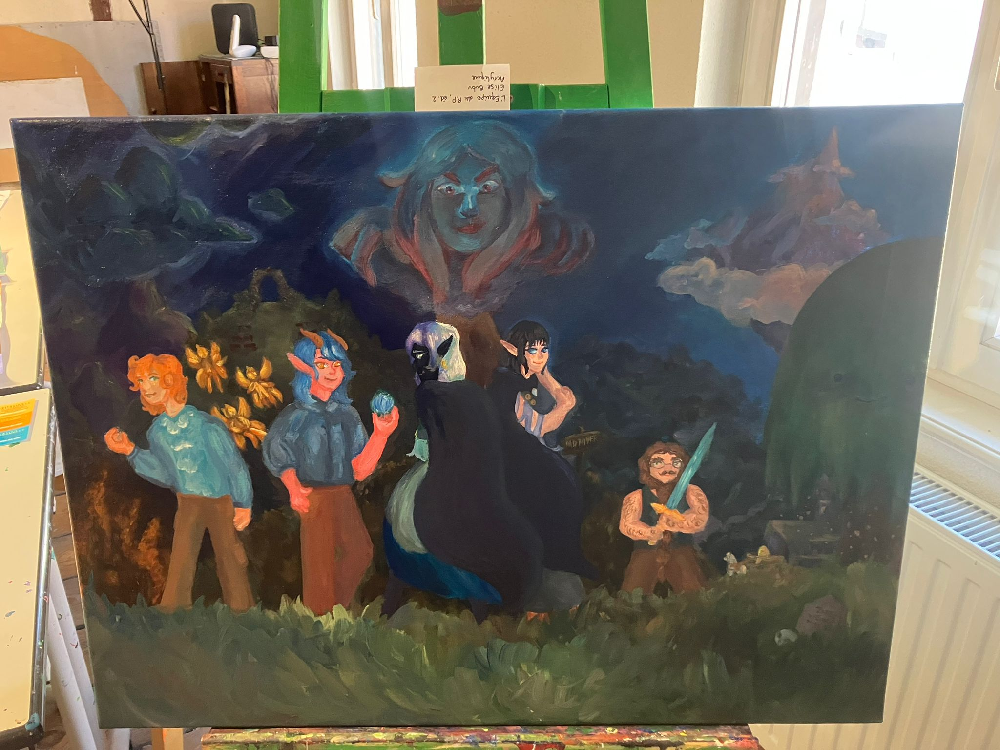